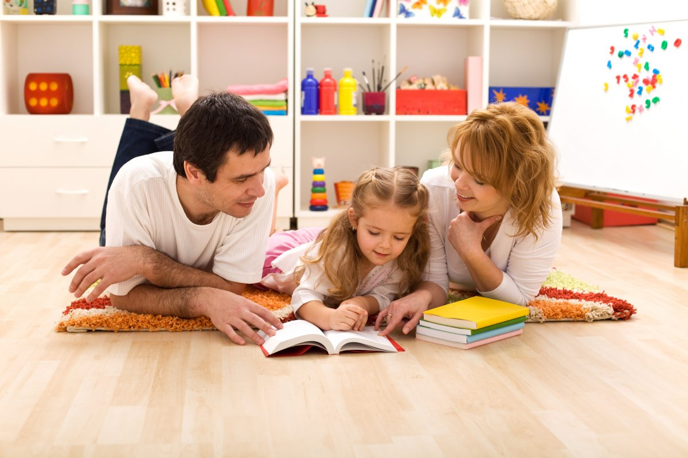
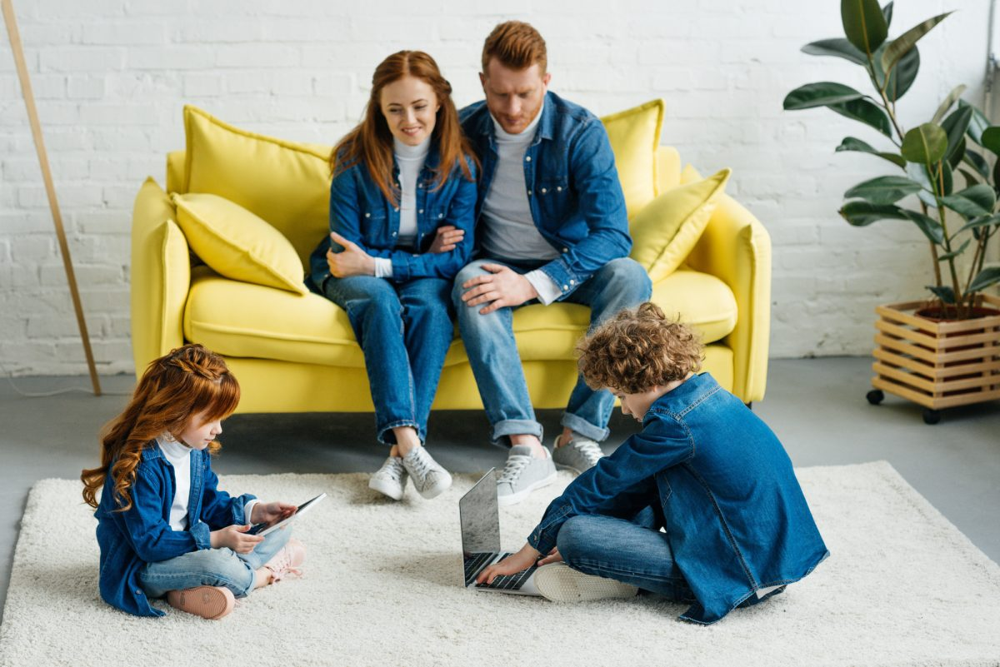

Навчання вдома: практичні поради для батьків від психологині Світлани Ройз
Як у період тривог заспокоїти своїх дітей, а також зробити так, щоб удома вони не закинули навчання і водночас не відчували себе напружено? Про це “Новій українській школі” розповіла сімейна і дитяча психологиня Світлана Ройз.
ЗАГАЛЬНІ ТЕЗИ
-
Зараз діти, так само як і ми, перебувають у напрузі. Вони відчувають загальну тривогу від невизначеності, від напруги батьків, від зміни звичного режиму та обмежень. До цього додаються хвилювання про ДПА/ЗНО – поки немає розуміння щодо цього питання, від цього напруга посилюється. Тобто, зараз діти, особливо старші, потребують батьківської підтримки, вони очікують від батьків психологічної допомоги.
- Я-підпункт
- Я підпідпункт
- Я підпідпункт
- Я підпідпункт
- Я-підпункт
- Я-підпункт
- Я-підпункт
- Ідеально, якщо батьки намагаються бути в контакті зі станом дитини і її почуттями, чесно говорять про те, що з нами відбувається. Треба просто сказати: “Якби мені зараз було потрібно вчитися вдома, я би, мабуть, на все забив. Мені самому складно зараз зібрати себе в купу. Давай допоможемо одне одному – наприклад, разом складемо розклад на день. Я потребую твоєї допомоги”.
- Ми маємо розуміти, що перші два тижні – це період адаптації, коли ми тільки напрацьовуємо новий життєвий досвід. У когось – два, у когось – два з половиною. Це індивідуально. Взагалі, “по-хорошому”, на адаптацію дається до двох місяців, тобто два тижні – це фантастично швидко. Тому зараз ми маємо бути дуже терплячими і обережними до себе і своїх дітей.
-
Треба просто робити вдих та видих і нагадувати собі: “Я не вчитель”.
Основа техніки безпеки для батьків: нам потрібно пам’ятати, що ми НЕ вчителі для наших дітей, у нас немає потрібних професійних навичок, ми не вміємо пояснювати предмети і, найголовніше (власне, чому батькам не можна навчати своїх дітей) – ми дуже емоційно залучаємось. Якщо дитина щось не розуміє, ми не можемо впоратись зі своїми емоціями: нам здається, що ми дурні, наша дитина дурна і таке інше. А дитина може просто не сприймати нас у ролі вчителя – і це нормально.
ПРАКТИЧНІ ПОРАДИ
- День не має перетворюватись на суцільне виконання домашніх завдань. Школа – це не все життя дитини, особливо зараз. Діти і без того відчувають себе незрозуміло за що покараними, і нам важливо, аби школа не асоціювалась із додатковим покаранням.
-
У дитини, яка вчиться вдома, має бути окрема територія. Навіть якщо в неї немає своєї кімнати, можна символічно позначити невелику частину мотузкою на підлозі, зробити парканчик з іграшок або коробок – що завгодно.
Ми всі зараз змушені жити і працювати разом на невеличкій території, і це час перегляду кордонів кожної людини – неважливо, великої чи маленької – і поваги до цих кордонів. Це час, коли батьки вчаться стукати, перш ніж увійти в кімнату підлітка, якщо вони не робили цього раніше. Час, коли дитина вчиться не підходити без нагальної потреби до мами, яка працює з дому. - Треба слідкувати, щоб дитина будь-якого віку робила перерви – і краще, якщо ми зупинимо її трохи раніше, ніж вона втомиться. Маленькі втомлюються за 10-15 хвилин, підлітки – десь за півгодини.
- Відчиняйте вікна, провітрюйте, дбайте про свіже повітря під час навчання дитини. У мозку є структури, що відповідають за відчуття безпеки – у разі нестачі свіжого повітря ці показники зменшуються. Якщо дитина перебуває в задусі, у неї знижується активність, вона втомлюється, закатує істерики. Чим менше повітря, тим гірші результати навчання.
-
Часто, коли дитина бачить велику кількість завдань (більше 8), у неї природно починається паніка і їй легше взагалі закрити щоденник або месенджер. Наше завдання – допомогти структурувати підхід до навчання. Буквально скласти з дитиною план: ти починаєш робити оце, потім – це.
Також – розбивати велике завдання на маленькі частини. Це стосується всіх дітей. Загалом старші школярі вже вміють це робити самостійно, але якщо дитина у стані тривоги – розфокусована, погляд відсторонений, відсутній, або дитина хапається то за одне, то за інше – їй треба допомогти. -
Часто дитина перед вибором: з якого завдання почати – з простого чи складного? Це залежить від того, як ваша дитина “вступає в діяльність”. Щоб це зрозуміти, треба поспостерігати: як дитина прокидається?
Є діти, які швидко встають, умиваються і починають усе робити. Коли така дитина їсть, вона спочатку з’їдає всі найсмачніші шматки і залишає несмачні наостанок. У такому ж режимі вона “вмикається” в усе нове. Тобто дуже швидко “входить” в урок – але й швидко втомлюється. Вона швидко здає контрольну роботу – але не факт, що там не буде помилок. Про таких дітей кажуть, що вони все схоплюють миттєво, але не зрозуміло, наскільки довго будуть це пам’ятати. Таким дітям треба складне давати на початку. І робити зарядку після уроку.
Натомість, є діти іншого типу – які довше розганяються. Вони “вмикаються” не так швидко – але довше йдуть. Ці діти переважно встають поволі, не з першого разу, зазвичай спочатку з’їдають несмачне, а смачні шматочки залишають наостанок. Таким дітям треба на розгін давати легкші завдання, а складні – потім. Їм навіть можна ставити під час навчання енергійну музику – якщо музика їх не відволікає. Або робити перед уроком зарядку. - Коли ми хочемо дитину в щось швидко залучити – наприклад, у навчання – ми маємо пам’ятати, що в неї, як у кожної людини, є інерція. Коли маленька дитина грається, а їй треба сідати за уроки – тут допоможе обумовлений час або дзвоник будильника, який кличе до навчання. Або ми говоримо: “За 10 хвилин сідаємо за уроки”. Так ми виявляємо повагу до своєї дитини як до людини. Зрозуміло, що це складно, адже багато батьків сьогодні також живуть у режимі дефіциту сил. Найлегший спосіб зекономити сили – примус. Але це програшний спосіб.
ПОЧАТКОВА ШКОЛА
У початковій школі мотивація до навчання – виключно зовнішня. Малюк вчиться заради задоволення, фану, заохочення. Треба також розуміти, що в дитини вже є невеликий, але досвід навчання. У першокласників його ще нема, але в 2-3 класах він уже напрацьовується.
- Нам важливо, щоб, за можливості, не збивався звичний режим. Це неможливо в повній мірі, він однаково вже збився, але треба створити новий і намагатись його дотримуватись.
- Треба, щоб для навчання було окреме місце. Ідеально, щоб був окремий простір, “кокон”, щоб дитина розуміла: вона туди заходить – і все, вона вже налаштована на навчання.
- Важливо, щоб до навчання кликав якийсь сигнал, як дзвоник – наприклад, будильник телефона. Це має бути приємний звук, якась улюблена музика – але краще, аби це не був мамин голос. По відношенню до мами і тата й так буде вдосталь напруги: зараз батьки живуть у змішаних ролях, а скрізь, де є змішані ролі, – є конфлікти.
- Оптимально, коли дитина займається 10, максимум 15 хвилин. Потім дзвенить дзвоник, дитина може випити води, порухатись. Ми ж пам’ятаємо, що живемо в умовах, коли в дитини знижена рухливість і нестача повітря.
- Пам’ятаймо, що ми – не няньки і за дитину завдання не робимо. Але деяким дітям важливо, аби ми були в кімнаті, коли вони вчаться. Можна займатися своїми справами, але потрібна присутність батьків. Час від часу можна підходити до дитини, питати, як справи, підтримувати її, прикладаючи руку до місця підтримки – між лопатками на спині. Це таємне місце підвищення самооцінки, додавання сил.
- Прекрасно, якщо батькам стане сил зробити з малюками “Гоґвортс” – тобто створити ігрове середовище. Якщо ми зможемо озброїтись чарівною паличкою, якою б торкалися лоба дитини і казали: “Ти з усім впораєшся”. Чарівний будильник у нас уже є, і не завадить знайти для дитини чарівний камінець мудрості – ну, і для себе принагідно.
- Ми пам’ятаємо, що дитина перебуває в напрузі – отже, ми маємо більше, ніж зазвичай, звертати увагу на те, що їй вдається добре. Так званий метод “зеленої ручки” – підкреслювати не недоліки, а успіхи – особливо потрібний у режимі підвищеної напруги, коли дитина не дуже впевнена в собі.
СЕРЕДНЯ ШКОЛА
У школярів середньої школи під час підліткової кризи зазвичай страждає навчальна мотивація, тому що в мозку в цей час інші завдання. Підлітковий вік – це час, коли мозок складно сприймає нову інформацію. Тоді відбувається так званий синаптичний прунінг – відкидання невикористаних нейронних зв’язків. Щоб це відбулося, треба обмежити приймання нової інформації.
Дитина в цей момент стає дуже сонливою і починає трохи “гальмувати”. У неї потерпає довгострокова пам’ять. Вона, не те що б не хоче – а фізично не може запам’ятовувати обсяги інформації, які їй пропонують. Її мозок має інші завдання. Можна сказати, як не шкода це визнавати, що в середній школі мотивації до навчання практично немає, або вона зароджується.
- Для підлітків добре, якщо їхній робочий день і день взагалі починається не о 8:30, а хоча б на годину пізніше. Це був би величезний внесок у їхнє здоров’я. Адже їхні потреби у сні більші, ніж зазвичай.
- Підлітки чинять опір материнській фігурі, вчителькам дуже складно працювати з підлітками. Якщо мама ще й починає керувати його навчанням – це вдвічі гірше. Тому було б чудово разом із підлітком обрати та встановити певний звуковий сигнал, який кличе його робити уроки. Так можна організувати весь денний розклад. Чим менше материнського голосу, який наказує, що робити, – тим краще. Усе, що стосується наказів, краще перенести в повідомлення у месенджер чи якісь звукові сигнали.
-
Підлітку важливо, аби ми бачили в ньому авторитетну фігуру. Тож якщо ми зараз перекладемо частину родинної відповідальності на нього, якщо він готовий її взяти, – це буде внесок і в наші стосунки, і у відчуття сили самим підлітком.
Ми можемо поставити пряме запитання: “Чим я можу бути для тебе корисним, що я можу зробити для тебе зараз?”. Наступний крок: “Я не хочу, аби твій день перетворювався на суцільне навчання, давай подумаємо, що там буде ще”. Щодо навчання можна сказати: “Давай сплануємо, скільки часу потрібно на кожен предмет, і скажи мені сам – тебе контролювати чи не треба?”. - Треба запитати підлітка, як краще облаштувати його місце. І тут, оскільки ми маємо справу зі спротивом, можливо, підліток вирішить робити уроки на підлозі, лежачи. Треба поставитись до цього з розумінням – це також буде внесок у стосунки і в повагу до особистого простору підлітка.
- Якщо підліток відчуває, що його контролюють – він буде бунтувати. Але йому також важливо бачити, що якщо він щось зробив – це він, умовно кажучи, зробив не даремно. Треба говорити, як ви цінуєте те, що він робить.
- Підліток може спитати: “Чому я маю це все робити, якщо ти взагалі нічого не робиш?”. Ми можемо вимагати чогось від дитини тільки тоді, коли їй є, що від нас дзеркалити. Я можу очікувати, що мої діти займаються зарядкою, якщо я сама займаюсь. Вони мають бачити, що ми вчимось або працюємо з дому. І це буде геніально – якщо ми всідаємось або разом, або кожен у своїй кімнаті, і до нього долітає, як ви слухаєте лекцію або працюєте.
Учні старшої школи вже націлені на результат. Якщо дитина нормально розвивається і дорослішає, у неї вже формується внутрішня мотивація до навчання. Така дитина буде сама шукати, де ще знайти інформацію, що їй потрібна. Тут ми можемо допомогти, розповідаючи їй про онлайн-курси, які ми самі бачили, різні джерела інформації з питань, що цікавлять дитину.
-
Дитина старшої школи вже може бачити власну користь. У нормі, до 14-15 років уже має визріти власна мотивація до навчання. Отже, цей вік має бути часом, коли ми вже не дуже контролюємо процес, дитина “вчиться сама”.
Якщо ми її усе ще контролюємо, – можливо, коли ми вийдемо з карантину, буде потрібна допомога тьютора, психолога, нейропсихолога, щоб подивитись, яка зі структур психіки дитини потребує корекції. Тому що у старшого школяра – дитини 16-17 років – уже має сформуватися внутрішній контроль і є безпосередня навчальна мотивація. Він сам розуміє, заради чого все це робить. - Якщо ми бачимо, що наша дитина – вмотивована і відповідальна, нам треба слідкувати, щоб вона відпочивала і перемикалась на різні види діяльності. У таких дітей може бути більша, ніж зазвичай, потреба в комп’ютерних іграх, де скидається напруга. Ідеально, якщо є правило: наприклад, дитина 40 хвилин грає на комп’ютері, а потім робить 20 присідань або іншу фізичну вправу. Треба, щоб ми вмикали тіло, тому що йому зараз не вистачає уваги.
Зараз непростий час і випробування для всіх – тож зичу сил батькам, дітям і вчителям.